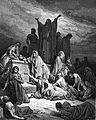

|
|
|
1 Chronicles 21
|
|
| 21:1
And Satan stood
up against Israel, and provoked David to number Israel. |

 (21:1) "Satan ... provoked David to number Israel." (21:1) "Satan ... provoked David to number Israel."
Who tempted David to number Israel?
Is it OK to take a census?
|
| 21:2
And David said to Joab and to the rulers of the people, Go, number Israel
from Beersheba even to Dan; and bring the number of them to me, that I may
know it.
|
| 21:3
And Joab answered, The LORD make his people an hundred times so many more
as they be: but, my lord the king, are they not all my lord's servants? why
then doth my lord require this thing? why will he be a cause of trespass to
Israel? |
|
| 21:4
Nevertheless the king's word prevailed against Joab. Wherefore Joab
departed, and went throughout all Israel, and came to Jerusalem. |
|
| 21:5
And Joab gave the sum of the number of the people unto David. And all they of Israel were a thousand
thousand and an hundred thousand men that drew sword: and Judah was four
hundred threescore and ten thousand men that drew sword.
|
 (21:5)
(21:5)
"A thousand thousand and an hundred thousand men"
According to this verse David's army had
1,100,000 men from Israel and 470,000 men from Judah, but 2 Sam.24:9
says the numbers were 800,000 and 500,000, respectively. Of course, either of these numbers is
ridiculously high for a battle between two tribal armies in 1000 BCE. (The United States had about
1.43
million active duty soldiers in 2010.)
How many soldiers?

 (21:7-17) God gets angry with
David for counting the people and for a punishment he offers him three choices: Three years of famine, three months to be
destroyed by enemies, or three
days of pestilence. When David can't make up his mind, God decides for him and
sends a pestilence that kills 70,000 men. (Presumably women and children were
also killed. If so, the total must have been more than 200,000.) In the middle
of the slaughter, God "repents of the
evil" that he was doing and tells the angel to stop the killing. One
wonders what God had in mind in the first place, since it was David who was
supposed to have sinned by taking the census -- not the people. Even David was
confused by this, and asked God, "these sheep, what have they done?" (21:7-17) God gets angry with
David for counting the people and for a punishment he offers him three choices: Three years of famine, three months to be
destroyed by enemies, or three
days of pestilence. When David can't make up his mind, God decides for him and
sends a pestilence that kills 70,000 men. (Presumably women and children were
also killed. If so, the total must have been more than 200,000.) In the middle
of the slaughter, God "repents of the
evil" that he was doing and tells the angel to stop the killing. One
wonders what God had in mind in the first place, since it was David who was
supposed to have sinned by taking the census -- not the people. Even David was
confused by this, and asked God, "these sheep, what have they done?"
(21:7)
"God was displeased with this thing; therefore he smote Israel."
(21:10) "Thus saith the LORD, I offer thee three things."
(21:12) "Either three years' famine; or three months to be destroyed before thy foes ... or else three days ... pestilence."
How many years of famine?
(21:13) "Let me fall now into the hand of the LORD;
for very great are his mercies."
After God threatens to kill hundreds of thousands of
innocent people for a census that he inspired, David says, "let us fall now into the hand of the
LORD; for his mercies are great."
Is God merciful?
(21:14) "So the LORD sent pestilence upon Israel: and there fell of Israel seventy thousand men."
God killed 70,000 men (and their families) in a plague to punish David for having a census that he (or Satan) inspired.
God's 85th Killing
(21:15) "And God sent an angel unto Jerusalem to destroy it:
and as he was destroying, the LORD beheld, and he repented him of the evil,
and said to the angel that destroyed, It is enough, stay now thine hand."
Does God repent?
(21:16a)
"David lifted up his eyes, and saw the angel of the LORD stand between
the earth and the heaven, having a drawn sword in his hand stretched out
over Jerusalem."
(21:16b)
"Then David and the elders ... fell on their faces."
(FOF)
(21:17) "David said unto God, Is it not I that commanded the people to be numbered? even I it is that have sinned and done evil indeed;
but as for these sheep, what have they done?"
The plague of Jerusalem
(Gustave Dore, 1865)
|
| 21:6
But Levi and Benjamin counted he not among them: for the king's word was
abominable to Joab.
|
| 21:7
And God was displeased
with this thing; therefore he smote Israel.
|
| 21:8
And David said unto God, I have sinned greatly, because I have done this
thing: but now, I beseech thee, do away the iniquity of thy servant; for I
have done very foolishly.
|
| 21:9
And the LORD spake unto Gad, David's seer, saying,
|
| 21:10
Go and tell David, saying, Thus saith the LORD, I offer thee three things:
choose thee one of them, that I may do it unto thee.
|
| 21:11
So Gad came to David, and said unto him, Thus saith the LORD, Choose thee
|
| 21:12
Either three years' famine; or three
months to be destroyed before thy foes, while that the sword of thine
enemies overtaketh thee; or else three days the sword of the LORD, even the
pestilence, in the land, and the angel of the LORD destroying throughout all
the coasts of Israel. Now therefore advise thyself what word I shall
bring again to him that sent me.
|
| 21:13
And David said unto Gad, I am in a great strait: let me fall now into the
hand of the LORD; for very great are his mercies: but let me not fall into
the hand of man.
|
| 21:14
So the LORD sent
pestilence upon Israel: and there fell of Israel seventy thousand men.
|
| 21:15
And God sent an angel
unto Jerusalem to destroy it: and as he was destroying, the LORD beheld, and he repented
him of the evil, and said to the angel that destroyed, It is enough,
stay now thine hand. And the angel of the LORD stood by the threshingfloor
of Ornan the Jebusite.
|
| 21:16
And David lifted up his eyes, and saw the angel of the LORD stand between
the earth and the heaven, having a drawn sword in his hand stretched out
over Jerusalem. Then David and the elders of Israel, who were clothed in
sackcloth, fell upon their faces.
|
| 21:17
And David said unto
God, Is it not I that commanded the people to be numbered? even I it is that
have sinned and done evil indeed; but as for these sheep, what have they
done? let thine hand, I pray thee, O LORD my God, be on me, and on
my father's house; but not on thy people, that they should be plagued.
|
| 21:18
Then the angel of the LORD commanded Gad to say to David, that David
should go up, and set up an altar unto the LORD in the threshingfloor of
Ornan the Jebusite.
|
| 21:19
And David went up at the saying of Gad, which he spake in the name of the
LORD.
|
| 21:20
And Ornan turned back, and saw the angel; and his four sons with him hid
themselves. Now Ornan was threshing wheat.
|
| 21:21
And as David came to Ornan, Ornan looked and saw David, and went out of
the threshingfloor, and bowed himself to David with his face to the ground.
|
| 21:22
Then David said to Ornan, Grant me the place of this threshingfloor, that
I may build an altar therein unto the LORD: thou shalt grant it me for the
full price: that the plague may be stayed from the people.
|
| 21:23
And Ornan said unto David, Take it to thee, and let my lord the king do
that which is good in his eyes: lo, I give thee the oxen also for burnt
offerings, and the threshing instruments for wood, and the wheat for the
meat offering; I give it all.
|
| 21:24
And king David said to Ornan, Nay; but I will verily buy it for the full
price: for I will not take that which is thine for the LORD, nor offer burnt
offerings without cost.
|
| 21:25
So David gave to Ornan
for the place six hundred shekels of gold by weight.
|
(21:25) "So David gave to Ornan for the place six hundred shekels of gold."
David buys the threshingfloor for 600 shekels of gold, but in 2 Samuel 24:24 he gets a much better deal and pays
only 50 shekels of silver.
What did David pay for the threshingfloor?
|
| 21:26
And David built there an altar unto the LORD, and offered burnt offerings
and peace offerings, and called upon the LORD; and he answered him from
heaven by fire upon the altar of burnt offering.
|
| 21:27
And the LORD commanded the angel; and he put up his sword again into the
sheath thereof.
|
| 21:28
At that time when David saw that the LORD had answered him in the
threshingfloor of Ornan the Jebusite, then he sacrificed there. |
|
| 21:29
For the tabernacle of the LORD, which Moses made in the wilderness, and
the altar of the burnt offering, were at that season in the high place at
Gibeon. |
|
| 21:30
But David could not go before it to enquire of God: for he was afraid
because of the sword of the angel of the LORD.
|
|
|


{kind=link}